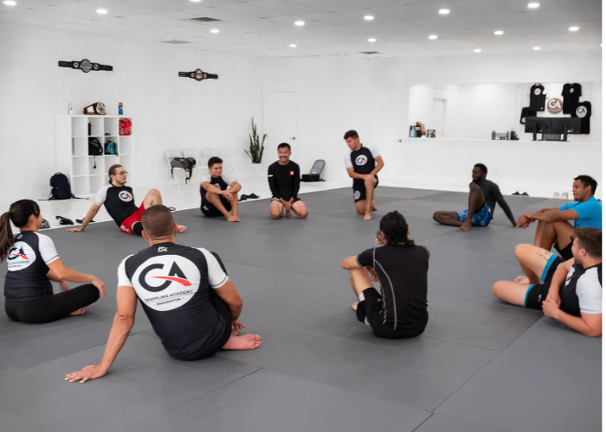

How a culture becomes visible.
A reported academy story built from observation, interviews, history, and the rituals repeated every day.
Field notes · People · Practice · Place
The directory tells you where. The spotlight helps you choose. The story reveals why a room matters.
Reported with the people who built it—not written from a distance.
Coach interview · Bradenton
At The Grappling Academy Bradenton, No-Gi is not a night on the schedule. It is the organizing idea of the room.
Inside the room Coach Dan Martinez on building foundations before offense, separating competition preparation from everyday class, and making welcome everyone’s responsibility.
A living editorial system
Each format answers a different question, but every piece returns the reader to a real academy, a real practice, and a possible first visit.
A reported academy story built from observation, interviews, history, and the rituals repeated every day.
A first-person account from a coach, beginner, parent, competitor, or lifelong student.
An essay connecting embodied practice to courage, humility, discipline, leadership, and daily life.
Clear, local, practical guidance that reduces uncertainty before someone walks through the door.
The editorial covenant
Public research can begin a draft. The room itself must complete the story.
Credentials are sourced. Culture is observed. Quotes are approved. Uncertainty is visible.
A story can be generous without becoming advertising. Trust is the asset.
Every story links to the academy spotlight, verified profile, and clearest first-visit path.
For academy owners
As The Way develops real relationships with local academies, these pages become a record of the people preserving, adapting, and passing the practice forward.
Find your academy in the directory